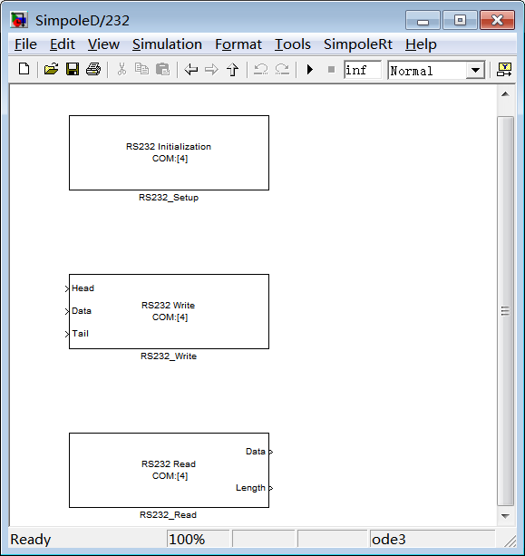
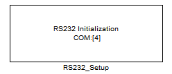
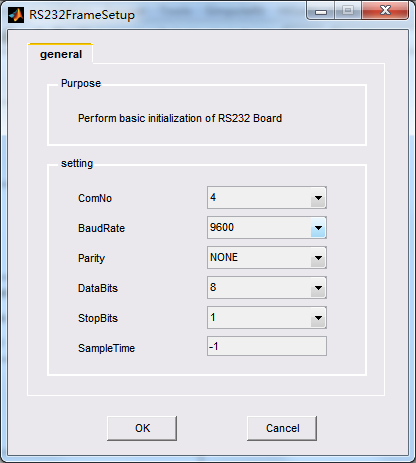
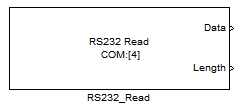
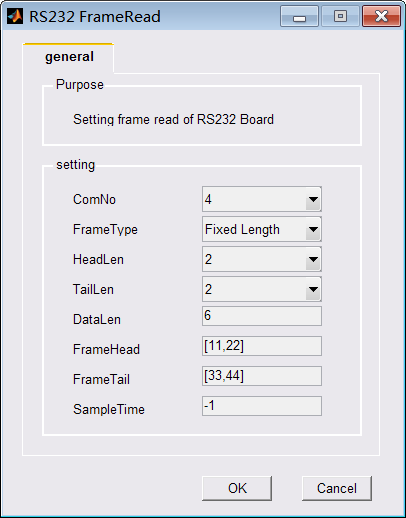
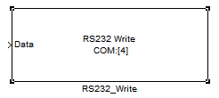
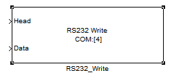
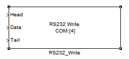
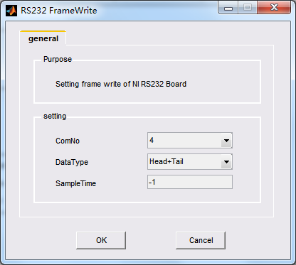

| Simpole® | |
|
|---|
RS232实时驱动（SimpoleD）是板卡的COM与系统模型的接口。本节内容主要介绍RS232 SimpoleD库的功能、配置。
具体内容如下：
RS232板卡的SimpoleD库提供了SimpoleD模块，用于在simulink模型中实现板卡的串行数据的发送、接收功能。
双击SimpoleD 库中图标：
右键单击，从菜单中打开RS232的模块库：

RS232板卡的各个模块的设置使用如下：

配置COM口、波特率、停止位、校验方式、数据位长度和采样时间。
RS232 FrameSetup模块的GUI配置界面如下图所示。

ComNo：选择COM口，范围为4至35；
BaudRate：选择波特率，支持标准和非标准波特率设置，波特率最高为1Mb/s；
Parity：选择校验位，有三种模式，即NONE——无校验，EVEN——偶校验，ODD——奇校验；
Data Bits：选择数据位，有4种模式，即8位、7位、6位、5位；
Stop Bits：选择停止位，有三种模式，即1位、1.5位、2位。
Sample Time：配置采样时间，数据可设置为-1或>0.0的任一数值。当设置为-1时，采样时间继承仿真步长。

配置接收串行数据的COM口、数据长度、帧头、帧尾和采样时间等。
Data：数据接收缓存区。
Length/Valid：在变长的帧格式的情况下Length表示实际接收到的数据量，0表示没有接收到数据；在定长帧格式的情况下Valid表示缓存区是否接收到新的数据，1表示接收到新的数据，0表示没有接收到新数据。
RS232 FrameRead 模块的GUI配置界面如下图所示。

ComNo：选择COM口，范围为4至35；
FrameType：选择帧类型，有Raw Data、Head+Length、Head+Tail、Fix Length四种类型选择；
HeadLen：数据帧头长度，在Head+Length和Head+Tail两种帧格式时有效，最大数据宽度为10；
TailLen：数据帧尾长度，在Head+Tail帧格式时有效，最大数据宽度为10；
DataLen：设置串行数据接收的长度，该长度为包含数据、帧头和帧尾的总长度，以字节为单位，数据长度可设置为1至256之间的任一整数；
FrameHead：数据帧尾，在Head+Length和Head+Tail帧格式时有效，最大数据宽度为10；
FrameTail：数据帧尾，在Head+Tail帧格式时有效，最大数据宽度为10；
SampleTime：配置采样时间，数据可设置为-1或>0.0的任一数值。当设置为-1时，采样时间继承仿真步长。

配置发送串行数据的COM口、数据类型和采样时间。
Data：数据发送缓存区。
Head/Tail：只有在GUI配置界面里面配置了该选项有效才会出现对应的端口，分别表示帧头和帧尾信息，最大长度为10。
RS232 FrameWrite 模块的GUI配置界面如下图所示。

ComNo：选择COM口，范围为4至35；
DataType：选择帧类型，有None、Head、Head+Tail三种类型选择；
Sample Time：配置采样时间，数据可设置为-1或>0.0的任一数值。当设置为-1时，采样时间继承仿真步长。
|
RS232 Features
|
RS232 Hardware Reference
|
|---|